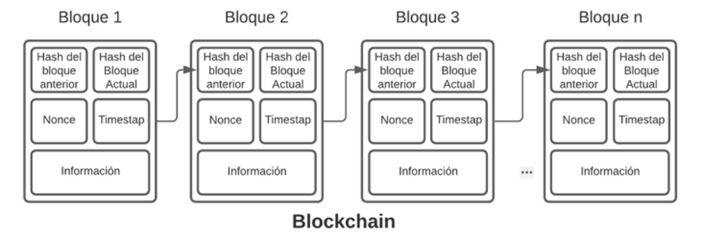
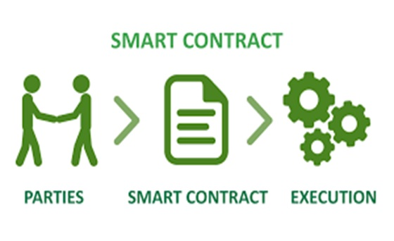
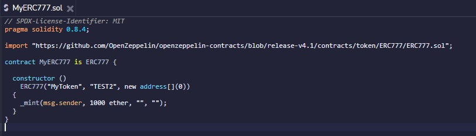
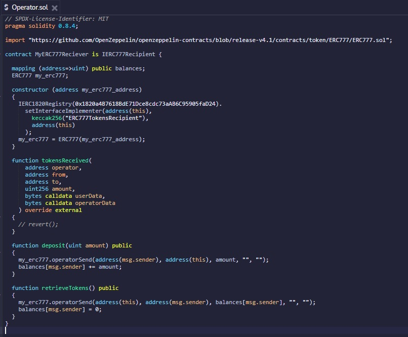

TALLER DE PROYECTOS
GRUPO : BLOCKCHAIN
PROYECTO : SMART CHAIN
Blockchain
Blockchain se trata de almacenar información con muchos testigos observando, lo que dificulta que la información sea falseada, siendo un sistema de almacenaje de información fuera del sistema convencional, una herramienta que sirve para crear una sociedad más equitativa y transparente.
Integrantes del Proyecto

STEVEN PALMA MUÑOZ
steven_palma@usmp.pe
Líder de equipo
(Programador Front-end)

ANGELICA KASANDRA RIVERA LAYNES
Angelica_rivera@usmp.pe
QA
(Especialista en Testing)

ERIK JOEL ESPINOZA MENDOZA
erik_espinoza@usmp.pe
Investigador
(Pogramador de contratos)
ESTRUCTURA DE LA BLOCKCHAIN
Blockchain es super seguro, pero no gracias a un super antivirus ni tampoco por tener un potente firewall, Blockchain se autoprotege gracias a su propia arquitectura ya que Blockchain es una cadena de bloques que contiene información, cada bloque puede tener diferentes tipos de información.
La estructura de Blockchain esta compuesto por:
1.-La información: Un ejemplo seria la información relativa a las transferencias de dinero: emisor, receptor, fecha, cantidad, etc.
2.-El hash: El hash es el número de identificación único e irrepetible que se genera en cada uno de los bloques.
3.-El hash del bloque anterior: Cada bloque tiene el hash del bloque anterior por lo que cada bloque queda conectado con su predecesor y su sucesor formando una cadena.
CONTRATOS INTELIGENTES
Un contrato inteligente es un programa que se almacena dentro de una Blockchain. Los contratos inteligentes amplían la Blockchain de los datos al Código y representan un contrato entre las partes, el contrato se codifica y cuando se produce una acción, el código se ejecuta y proporciona una respuesta.
Todos los términos y condiciones de los contratos se definen mediante programación. Una definición especifica las reglas, los requisitos y las recompensas de los participantes en la Blockchain. También especifica como se transfieren los recursos digitales entre las partes y a cada contrato inteligente se le asigna una dirección de 20 bytes que lo identifica de forma única.
Los contratos inteligentes se ejecutan por sí solos, envían eventos que desencadenan transiciones de estado y llaman a funciones, y además, son ideales para la tecnología de Blockchain porque permiten a la gente que no se conoce, hacer negocios de forma segura y sin intermediarios.
Los contratos inteligentes tienen estas propiedades:
1.-Transparencia: Los usuarios de Blockchain pueden leer los contratos inteligentes y acceder a ellos mediante las API.
2.-Inmutabilidad: La ejecución de contratos inteligentes crea registros que no se pueden cambiar.
3.-Distribución: Los nodos de la red validan y comprueban la salida del contrato, los estados del contrato pueden ser visibles públicamente, en algunos casos incluso las variables "privadas" son visibles.
HERRAMIENTAS NECESARIAS PARA DESARROLLAR CONTRATOS INTELIGENTES
Metamask
MetaMask es una extensión o plugin para navegadores web que permite a los usuarios interactuar fácilmente con las DApps de la blockchain de Ethereum. ... Gracias a esto, los usuarios son capaces de utilizar de forma sencilla dichas aplicaciones distribuidas y todo de forma integrada desde su navegador favorito.
Ethers
Ether, como otras criptomonedas, utiliza un libro digital compartido donde se registran todas las transacciones. Es de acceso público, completamente transparente y muy difícil de modificar a posteriori.
Truffle
Truffle incluye la capacidad para crear scripts de despliegue y migraciones. Es importante entender el contenido del directorio de migraciones. Los archivos de migraciones se usan para desplegar contratos en la blockchain y su nombre empieza con un número que indica el orden en el que debe ejecutarse.
OpenZeppelin
OpenZeppelin es un proyecto que proporciona un conjunto de herramientas para desarrollar aplicaciones descentralizadas y smart contracts poniendo el foco en la seguridad de las mismas. Para ello, aplican en sus soluciones patrones estándar de seguridad y buenas prácticas de desarrollo aprendidas de la experiencia que han ido cogiendo los desarrolladores de Zeppelin y de la comunidad, gracias a auditar centenares de smart contracts y de aplicaciones descentralizadas a los largo de los últimos años.
Infura
Infura es una plataforma que proporciona un conjunto de herramientas e infraestructuras que permiten a los desarrolladores llevar fácilmente su aplicación blockchain de la prueba, a la implementación a escala, con acceso simple y confiable a Ethereum e IPFS.
Etherscan
Etherscan es la plataforma líder de BlockChain Explorer, Search, API y Analytics para Ethereum, una plataforma descentralizada de contratos inteligentes. ... Puede utilizar tokens basados en Ethereum en sus sistemas con su propio nombre.
MESAS DE TRABAJO PARA DESARROLLAR CONTRATOS INTELIGENTES
IDE REMIX
Remix es un IDE basado en un navegador web que permite escribir contratos inteligentes de Solidity, para más tarde implementar y ejecutar el contrato inteligente.
VS CODE
VS Code es un editor de código fuente multiplataforma con muchas bondades, portable, ligero y rápido. Nos permite trabajar con diversos lenguajes de programación y nos auxilia mucho mientras no estemos usando nuestro IDE.
SOLIDITY
Solidity es un lenguaje orientado a objetos para escribir contratos inteligentes.
Como se mencionó anteriormente, los contratos inteligentes son programas almacenados dentro de una cadena de bloques donde se especifican las reglas y el comportamiento de los activos digitales que se transfieren. Los contratos inteligentes contienen lógica de estado y es programable.
Las transacciones dan como resultado funciones que se ejecutan en contratos inteligentes y estos contratos a su vez, permiten crear un flujo de trabajo empresarial.
Caracteristicas de SOLIDITY:
1.- Solidity es el lenguaje de programación más popular de la cadena de bloques de Ethereum.
2.- Solidity es un lenguaje de alto nivel que se basa en otros lenguajes de programación, como C++, Python y JavaScipt.
3.- Solidity es de tipo estático, lo que significa que la comprobación de tipos se realiza en el tiempo de compilación y no en el tiempo de ejecución, como sucede con los lenguajes de tipos dinámicos. En los lenguajes de tipos estáticos hay que especificar el tipo de cada variable.
4.- Solidity admite la herencia, de modo que las funciones, variables y otras propiedades que existen en un contrato se pueden usar en otro. Ademas, admite tipos complejos definidos por el usuario como "structs" y "enumeraciones", lo que permite agrupar tipos de datos relacionados entre sí.
5.- Solidity es un lenguaje de programación de código abierto que cuenta con una comunidad de colaboradores cada vez más nutrida.
EJEMPLO 1: CONTRATO PARA CREAR TOKENS ERC777
Utilizando el IDE Remix de ethereum, realizamos un contrato que nos permitirá crear tokens de tipo ERC777.
Los tokens son conocidos como un activo digital, ya sean bitcoin, Ether u otras criptomonedas que representan una cantidad o valor. La diferencia es que, con un token, el valor podría no ser monetario. Los tokens pueden representar tiempo, servicios, propiedades o bienes que se pueden comercializar.
Los tokens pueden conceder permisos de plataforma especiales a un usuario, conceder acceso exclusivo a un servicio o representar la propiedad. También puede representar criptomonedas que tengan un valor monetario.
En resumen, los tokens de la Blockchain son básicamente contratos inteligentes que usan la Blockchain de Ethereum. Todos los elementos que contiene Ethereum se pueden representar como un contrato inteligente y no hay ninguna regla que restringa lo que pueden hacer los contratos inteligentes. Por lo tanto, la comunidad ha desarrollado estándares para documentar la manera en que un contrato de token puede operar con otros contratos. Los estándares también describen los detalles de la implementación de cada tipo de token.
EJEMPLO 2: CONTRATO PARA ALMACENAR TOKENS
Utilizando el IDE Remix de ethereum, realizamos un contrato que nos permitirá almacenar nuestros tokens y retirarlos cuando nosotros queramos.
Con este contrato, se busca demostrar que se pueden utilizar 2 contratos al mismo tiempo, ya que trabaja en conjunto con el contrato anterior, pero tambien puede trabajar con cualquier otro contrato que se encargue de la creación de tokens.
ARQUITECTURA DE UN SISTEMA BLOCKCHAIN

La arquitectura de un sistema Blockchain está compuesto por:
1.-La API con la que el usuario podrá interactuar con el Smart Contract.
2.-El contrato inteligente que realizará la gestión de la información de manera autónoma o por invocación del usuario cuando detectan eventos externos.
3.-El mecanismo de consenso que aprueba las transacciones lanzadas por el contrato inteligente.
4.-La cadena de bloques cuya información almacenada no se podrá alterar.